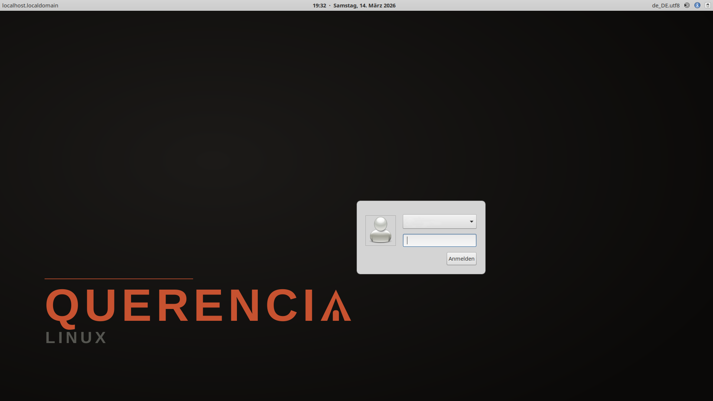
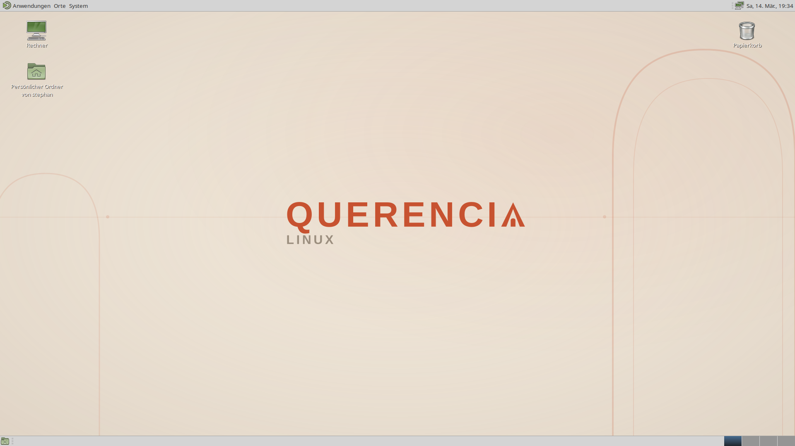

We put a mass-deployable cloud-native OCI container image… around a desktop from 2010. You're welcome.
A bootable OCI container image that works as a complete Linux desktop. Atomic updates with automatic rollback, built on enterprise-grade AlmaLinux 10. Install apps with Flatpak, CLI tools with Micromamba, dev environments with Distrobox — no root required.
A complete desktop with sensible defaults — ready to use from first boot.
Yes, it has a taskbar. Yes, it has a start menu. No, we will not apologize. BlueMenta theme, Noto fonts, Dracula terminal.
Read-only root filesystem powered by bootc. Updates are atomic — if anything breaks, roll back in seconds.
System and Flatpak updates every 6 hours, silently in the background. Desktop notification when a reboot stages a new image.
Mesa + Vulkan (RADV) + VA-API hardware decoding out of the box. Open-source amdgpu driver, no setup needed.
Complete codec support via RPM Fusion — GStreamer, FFmpeg, hardware-accelerated video. Just play your files.
CUPS with Gutenprint/Foomatic drivers, SANE scanner
backends, mDNS for .local network
discovery.
NetworkManager with WiFi, OpenVPN, WireGuard, Bluetooth (Blueman), and firewalld — all pre-configured.
SELinux enforcing with graphical troubleshooter, firewalld enabled, PolicyKit for admin dialogs. Enterprise-grade.
Language packs for English, German, French, Spanish, Italian, Portuguese, Dutch, Polish, Russian, Japanese, Chinese, Korean.
From login screen to desktop — clean, branded, ready to use.


Your entire system is a single OCI image. Updates download a new image, stage it, and activate on reboot — the previous version is always kept.
Update flow:
GitHub Push → CI builds image → Push to GHCR →
bootc upgrade on your PC → Reboot (old
image kept for rollback)
The root filesystem is read-only. Software lives in user space — safe, isolated, and easy to manage.
Sandboxed apps from Flathub. Warehouse is pre-installed as your app store.
flatpak install flathub com.spotify.Client
The base environment is always active.
Install anything from conda-forge.
micromamba install ripgrep python nodejs
Full mutable containers with dnf,
apt, or any package manager.
ujust distrobox-fedora
Choose the method that fits your situation.
From any existing bootc or Atomic system:
The new image activates on reboot. Your previous system is kept for rollback.
LightDM greets you. On first login, Warehouse
installs, Flathub connects, and your Micromamba
base environment is ready.
Use Ventoy, Rufus, or dd to write
the ISO to a USB drive.
The Anaconda installer guides you through language, keyboard, timezone, disk, and user creation. No hardcoded defaults — you choose everything.
Remove the USB, reboot, and you're home.
VM display drivers (QXL, VESA, spice-vdagent) are included.
System-wide defaults that every user can override individually.
Your system is a container image. Updates
replace the entire image at once (atomic) — no
half-finished upgrades, no broken dependencies.
The root filesystem is read-only (immutable) —
no accidental rm -rf / moments. If
an update breaks something, reboot into the
previous image. That's it. The rest is just
buzzwords.
No — the root filesystem is read-only. Use Micromamba for CLI tools and languages, Flatpak for GUI apps, or Distrobox for full mutable environments with dnf/apt.
ujust rollback (or
sudo bootc rollback) switches back
to the previous image instantly. You can also
pick it from the GRUB boot menu.
Any GPU supported by the open-source
amdgpu driver works out of the box
— Mesa, Vulkan (RADV), VA-API hardware decoding
are all included. Run
ujust gpu-info to check.
From our own COPR: winonaoctober/MateDesktop-EL10 — 128 packages, all under our control. 111 are built from Fedora distgit, 5 from our own GitHub forks, and 11 are stable upload SRPMs.
Not with MATE — it requires Xorg. LightDM starts an Xorg session. Wayland support would require switching to a different desktop environment.
Warehouse is installed automatically on first login. Find it in your application menu — it shows Flatpak apps from Flathub.
GNOME removed the desktop icons. KDE added 47 settings for the desktop icons. We just… have desktop icons. Also, we spent 3 months packaging 128 MATE packages for EL10 and at this point it's personal. AlmaLinux already provides official GNOME and KDE atomic images — Querencia fills the MATE gap.
Querencia is built on AlmaLinux 10 (enterprise-stable, RHEL-compatible) with MATE Desktop. Universal Blue is built on Fedora (rolling, bleeding-edge) with GNOME or KDE. Different philosophy: we optimize for stability and reliability over new features.
One command to switch. Rollback anytime. Taskbar included.